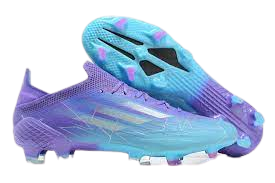
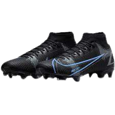

Tamanho 40
Cores:azul, dourado, preto
Marca:NIKE
Preço:199,99
Parcelas em até 5x no cartão de credito
Importante: Feita com uma série de materiais reciclados, esta parte superior apresenta pelo menos 50% de conteúdo reciclado. Este produto representa apenas uma das soluções da Adidas para ajudar a acabar com o desperdício de plástico.
Tamanho 40
Cores:azul bebe, roxo, branco
Marca:ADIDAS
Preço:220,00
Parcelas em até 6x no cartão de credito
Importante: A Chuteira Campo Adidas Artilheira VI te ajuda a se tornar aquele jogador que joga bonito e não se esconde nos momentos decisivos. A parte superior texturizada em sintético assegura um toque macio na bola, já o forro têxtil oferece conforto sem igual aos pés. A sola em borracha garante estabilidade enquanto você parte pra cima dos defensores e pensa na próxima jogada. Mude o jogo e compre já essa chuteira campo Adidas.
Tamanho 40
Cores:preto, verde claro, vermelho
Marca:NIKE
Preço:150,99
Parcelas em até 4x no cartão de credito
Importante: A gaiola de velocidade dentro da estrutura é feita de um material fino, mas forte, que prende o pé ao solado sem colocar peso adicional para um bloqueio ideal, Um cabedal moldado em material sintético tem um padrão texturizado para um melhor controle da bola em dribles velozes.